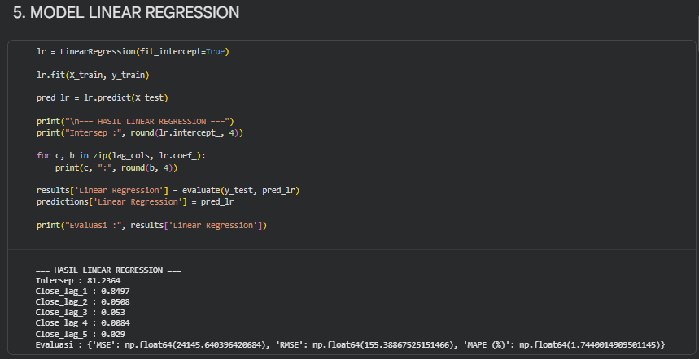
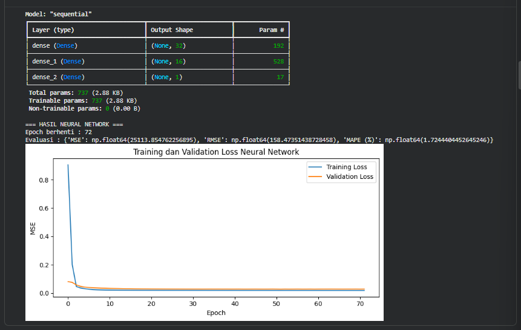
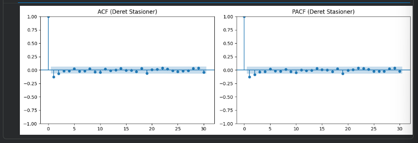
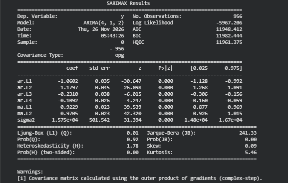
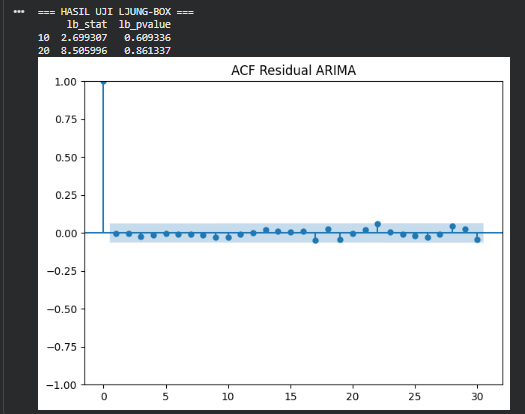
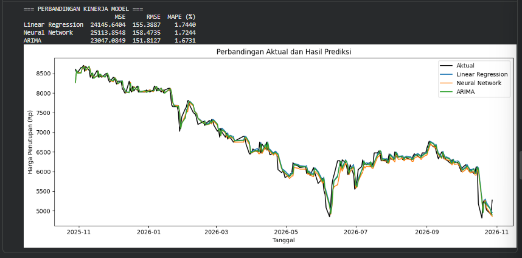
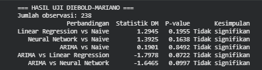
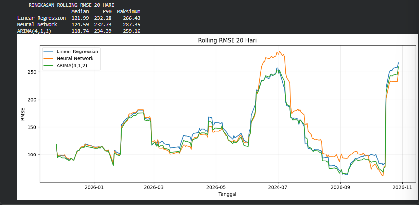

Time Series Analysis & Machine Learning | Academic Research Project
A comparative time series forecasting study analyzing historical market data of PT Bank Central Asia Tbk (BBCA) across Open, High, Low, Close, and Volume variables. Structured using the CRISP-DM framework, the project benchmarks Linear Regression, Sequential Neural Network, and ARIMA(4,1,2) models using MSE, RMSE, MAPE, Diebold-Mariano significance tests, and 20-day rolling error analysis.
Processed historical OHLCV stock data, conducted stationarity diagnostics via ACF/PACF plots, and engineered lag features for predictive modeling.
Compared Linear Regression (RMSE 155.39), Neural Network (RMSE 158.47), and ARIMA(4,1,2) which achieved the lowest error (RMSE 151.81, MAPE 1.67%).
Verified white-noise residuals via Ljung-Box tests, assessed forecast differences with Diebold-Mariano tests, and tracked stability via 20-day Rolling RMSE.

Trained with 5 lag features (Close_lag_1 to Close_lag_5), achieving MSE 24,145.64, RMSE 155.39, and MAPE 1.74%.

3-layer Dense architecture (32 → 16 → 1 units, 737 parameters) converged at epoch 72 with smooth Training & Validation Loss and MAPE 1.72%.

Autocorrelation and Partial Autocorrelation plots of the differenced stationary series used to identify optimal ARIMA(p, d, q) orders.

Statistical summary across 956 observations showing statistically significant AR(1–4) and MA(1–2) coefficients (p < 0.001).

High p-values at lag 10 (0.609) and lag 20 (0.861) along with flat residual ACF confirm white-noise behavior with no remaining autocorrelation.

Visual trajectory and metric benchmark showing ARIMA outperforming Linear Regression and Neural Network with RMSE 151.81 and MAPE 1.67%.

Pairwise forecast accuracy comparison across 238 test observations evaluating statistical significance against Naive and competing models.

Time-varying error evaluation demonstrating ARIMA(4,1,2) maintaining the lowest median rolling RMSE (118.74) and lowest peak error (259.16).